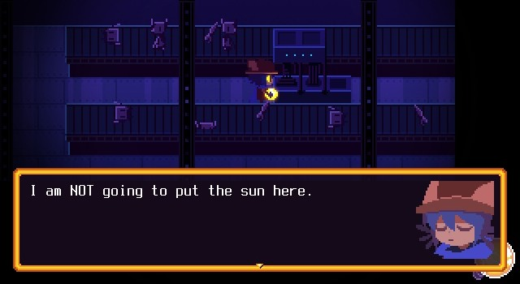
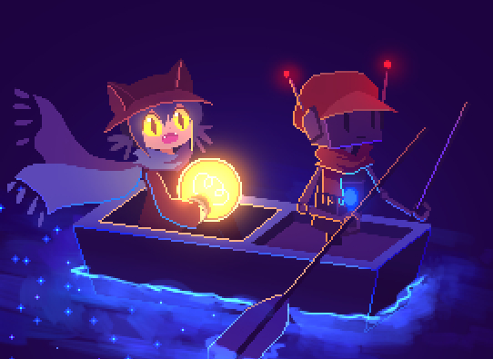

OneShot Review

Oneshot is an RPG puzzle-adventure game developed by Future Cat LLC and published by KOMODO. Oneshot was actually developed in 2014 for an indie game contest but was remade and got released on December 9, 2016. Oh boy, where do I even start? Oneshot is simply a game where you guide a child named Niko in an unknown dying world they've suddenly awoken to and help them to go home by saving the world. But what's amazing about this game is their fourth-wall-breaking plot, where the game actually acknowledges and knows you, the player, exist. I won't go too much into detail about what I mean by that, since I would be spoiling you at that point. But it's pretty similar to Undertale if you know that game, though Oneshot is more puzzle-based than combat.
Speaking of puzzles, let's first dive into its gameplay. This game has a super interactive environment and crafting item system, and they've definitely established that during the first puzzle that they give you. Though, I suppose that should be expected from an RPG puzzle game, but the developers did a good job on the game's learning curve. Most of the puzzles were challenging but fulfilling to solve, and I said "most" just because there's one or perhaps two puzzles that were mildly annoying to solve for me XD.
Anyways, the game does a great job guiding the player on what to do/where to go but not exactly to the point where it's just hand-holding. You still need to explore different areas and find items that you need in order to get a bigger picture of what exactly you need to do. And luckily, there's also a fast-travel feature to areas you've already explored to make your life easier.

Each character's design is very cutesy, appealing, and quite somehow matches their personality. The environment's art is overall simple, but it definitely suits well with the plot of the story. I love how each area has its own ambient theme soundtrack; it really helps to set the mood and atmosphere of that particular area you're going through. Also, like I've mentioned earlier, their world is fading slowly, and I love how most of the music in the game gives you that exact melancholy feeling of "being hopeful, but does it really matter?"
And finally, for the most important aspect in an RPG game, the story. The story is just a one-of-a-kind experience. The way they've capitalized their fourth-wall breaks into the plot is just superb! It really felt like I was part of the story, since the game and Niko are very interactive with you. Unfortunately, the depth of most supporting characters isn't that deep since most of them merely exist for Niko's development or for Niko to progress for the plot. But some of them were pretty memorable despite having low screen time.
Progressing through the story wasn't really boring, mainly thanks to its overall plot, but also for its humor. I had good laughs at some moments and characters in the game, and sometimes even from exploring and interacting with items. The story is very well-thought-out, and the game does a great job letting you know and also reminding you what is currently at stake. The interaction between the game and you, the player, outside the game is such an intriguing concept to experience and definitely a concept that I won't forget for a while.
"Truly an exceptional and compelling RPG puzzle adventure game with its great use of fourth-wall breaks. The game's art and music perfectly complement the ambience of the story and its characters. Experiencing OneShot's story is truly a marvel of its own. Definitely a must-play!"